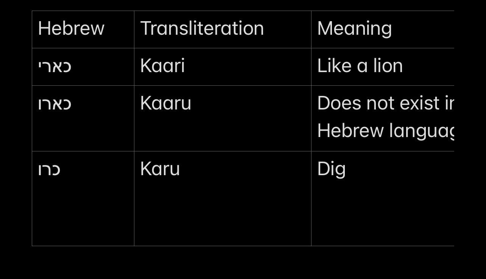
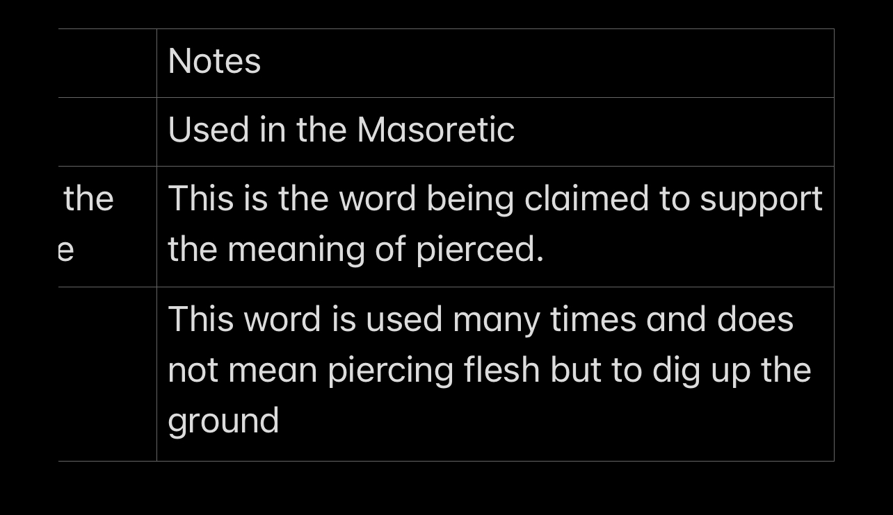
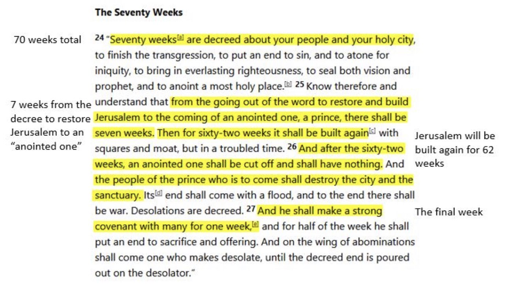
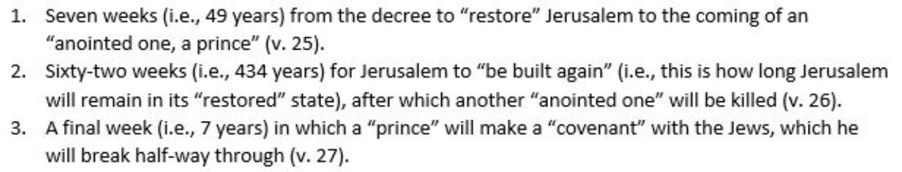

A Detailed and in Depth Refutation of Isaiah 53
Credit to Quran and Bible Blog
Without a doubt the most commonly quoted passage for the prophecy about crucifixion is Isaiah 53 which reads:
👇
“Who has believed what we have heard? And to whom has the arm of the Lord been revealed? For he grew up before him like a young plant, and like a root out of dry ground; he had no form or comeliness that we should look at him, and no beauty that we should desire him. He was despised and rejected by men; a man of sorrows, and acquainted with grief; and as one from whom men hide their faces he was despised, and we esteemed him not. Surely he has borne our griefs and carried our sorrows; yet we esteemed him stricken, smitten by God, and afflicted. But he was wounded for our transgressions, he was bruised for our iniquities; upon him was the chastisement that made us whole, and with his stripes we are healed. We all, like sheep have gone astray; we have turned every one to his own way; and the Lord has laid on him the iniquity of us all. He was oppressed, and he was afflicted, yet he opened not his mouth; like a lamb that is led to the slaughter, and like a sheep that before its shearers is dumb, so he opened not his mouth. By oppression and judgment he was taken away; and as for his generation, who considered that he was cut off out of the land of the living, stricken for the transgression of my people? And they made his grave with the wicked and with a rich man in his death, although he had done no violence, and there was no deceit in his mouth. Yet it was the will of the Lord to bruise him; he has put him to grief; when he makes himself an offering for sin, he shall see his offspring, he shall prolong his days; the will of the Lord shall prosper in his hand; he shall see the fruit of the travail of his soul and be satisfied; by his knowledge shall the righteous one, my servant, make many to be accounted righteous; and he shall bear their iniquities.
Therefore I will divide him a portion with the great, and he shall divide the spoil with the strong; because he poured out his soul to death, and was numbered with the transgressors; yet he bore the sin of many, and made intercession for the transgressors.”
(Isaiah 53:1-12)
————
However, when we look into the context issues arrive with this interpretation as noted by the HarperCollins Study Bible: 👇
“The early church identified the servant in this passage [Isaiah 52:13-53:12] with Jesus… In the original historical context, however, the servant appears to have been exiled Israel.”
— The HarperCollins Study Bible, p. 1089.
But first a quick background about the chapter:
Isaiah 53 sometimes called “the Suffering Servant” is one of the four “Servant Songs” in which the author of Isaiah describes the period of world history when the Messiah will arrive and the Jewish people become ‘humanity’s spiritual leaders’. It describes the world leader’s reaction at seeing how good the nation of Israel really is and the reasons they really oppressed and harbored hatred for the Jews. So keeping this background in mind let’s breakdown the 12 verses in their proper context.
——-
Let’s start with the first two verses of the chapter.
👇
“Who has believed what we have heard? And to whom has the arm of the Lord been revealed? For he grew up before him like a young plant, and like a root out of dry ground; he had no form or comeliness that we should look at him, and no beauty that we should desire him.”
(Isaiah 53:1-2)
The world leaders are talking about how shocked they are about Israel being saved. The ‘arm of the Lord being revealed’ mentioned in the verse is used as a metaphor for the Jews being delivered from persecution. Examples from the Hebrew Bible include: Exodus 3:20, Exodus 6:6, Exodus 14:31, Exodus 15:6; Deut. 4:34, Deut. 7:19; 26:8 Isaiah 51:9, Isaiah 52:10, Isaiah 62:8, Isaiah 63:12; Jeremiah 21:5, 27:5; Ezekiel 20:33; Psalms 44:3, Psalms 89:11, Psalms 98:1 and Psalms 136:12.
This metaphor of a tiny plant growing in the desert is meant to represent Israel as it struggles in the diaspora. No one will ‘want or desire’ this plant because it will obviously die in this environment. Examples of this metaphor being used for the nation of Israel in the Hebrew Bible are: Isaiah 60:21, Ezekiel 19:13, Hosea 14:6-7 and Amos 9:15.
———
Let’s now examine the third verse:
👇
“He was despised and rejected by men; a man of sorrows, and acquainted with grief; and as one from whom men hide their faces he was despised, and we esteemed him not.”
(Isaiah 53:3)
This verse describes how the nation of Israel is hated and rejected. Similar imagery is used in: Isaiah 49:7, Isaiah 60:15; Psalms 44:14 and Nehemiah 3:36.
This also brings us to the first reason why this alleged prophecy can’t apply to Jesus. According to the New Testament Jesus was popular and his crowds of followers begged him to be their king: Matthew 4:25, Mark 3:7-9, Luke 2:52 and Luke 4:14-15.
———
Now let’s examine the fourth verse:
👇
“Surely he has borne our griefs and carried our sorrows; yet we esteemed him stricken, smitten by God, and afflicted.”
(Isaiah 53:4)
Beginning with these verses, until the chapter’s end, the leaders are now confessing how they used the Jewish people as scapegoats and that they assumed that God hated them. A similar image is used in Jeremiah 50:7.
The next reason this verse can’t apply to Jesus is it says he was considered ‘stricken by God’. There are no sources including the New Testament where anyone claims that the crucifixion of Jesus was a sign that he was stricken or punished by God.
———
Let’s examine the fifth verse:
👇
“But he was wounded for our transgressions, he was bruised for our iniquities; upon him was the chastisement that made us whole, and with his stripes we are healed.”
(Isaiah 53:5)
The highlight when talking about this passage. ‘The Servant’ suffered because of other people’s actions– not to atone for people’s actions. The reason this matters is this verse describes how the world leaders (who keep in mind are the ones talking) confess that the Jews suffered because they hated them.
———
Let’s examine the sixth and seventh verse:
👇
“We all, like sheep have gone astray; we have turned every one to his own way; and the Lord has laid on him the iniquity of us all. He was oppressed, and he was afflicted, yet he opened not his mouth; like a lamb that is led to the slaughter, and like a sheep that before its shearers is dumb, so he opened not his mouth.”(Isaiah 53:6-7)
The leaders compare themselves to sheep because they realize that their lack of leadership (i.e. ‘a shepherd’) caused them to treat the Jews with hatred and that through the Jew’s suffering, punishments that should have befallen them stopped. The Hebrew Bible frequently uses the metaphor of “sheep led to the slaughter” for the nation of Israel. For example: 👇
“You give us as sheep to be eaten and have scattered us among the nations… we are considered as sheep to be slaughtered”
(Psalms 44:11-23)
This now brings to the next reason this can’t apply to Jesus. According to the gospel accounts, he clearly defends himself at his trial with Pilate (see John 18:36) and said on the cross: “My God, my God, why have you forsaken me?” (see Matthew 27:46).
———
Let’s now examine the eighth verse:
👇
“By oppression and judgment he was taken away; and as for his generation, who considered that he was cut off out of the land of the living, stricken for the transgression of my people?”(Isaiah 53:8)
The next major point here is the Hebrew at the end of this verse is לָֽמוֹ (la mow) which is:
“ לָֽמו the plural for…to him, or, on him..”
— Analecta Hebraica: With Critical Notes and Tables of Paradigms of the Conjugation of the Regular and Irregular Verbs
Long Link
This means the verse is talking about a group of people, not an individual and so it should be translated like how it was in the Complete Jewish Bible: 👇
“From imprisonment and from judgment he is taken, and his generation who shall tell? For he was cut off from the land of the living; because of the transgression of my people, a plague befell them.”
https://www.biblestudytools.com/cjb/isaiah/53.html
Furthermore, this verse’s context is that the world leaders are shocked that the Jews are returning back to the Holy Land, and are basically saying: “They were taken away oppressed and because of the evils of my nation, they were hurt.” The phrase, “cut off out of the land of the living” does not mean being killed, it means being exiled from Israel. For example from Christian commentary when talking about Ezekial 26:20 where the phrase is also used: 👇
“…and I shall set glory in the land of the living; in the land of Israel; so the Targum; and it is interpreted by the Jewish expositors and others the same way; and which may be called “the land of the living”; because the living God was worshipped in it; living men in a spiritual sense dwelt there, who offered up living sacrifices unto God, and who had the promise and pledge of eternal life; and which was the “glory” of all lands.”
— Gill’s Exposition of the Entire Bible
“The land of the living; the land of Judea, called land of the living, because a land where God will bless and give life by his word, ordinances, and Spirit: thus different shall Tryre’s captivity and Jerusalem’s be.”
— Jamieson-Fausset-Brown Bible Commentary
———
Another passage in Ezekial explains:
👇
“Then He said to me, “Son of man, these bones are the whole house of Israel. Look, they are saying, ‘Our bones are dried up, and our hope has perished; we are cut off.’ Therefore prophesy and tell them that this is what the Lord GOD says: ‘O My people, I will open your graves and bring you up from them, and I will bring you back to the land of Israel. Then you, My people, will know that I am the LORD, when I open your graves and bring you up from them. I will put My Spirit in you and you will live, and I will settle you in your own land. Then you will know that I, the LORD, have spoken, and I will do it, declares the LORD.’”
(Ezekiel 37:11-14)
Even ignoring these clear problems there is an even bigger one in Christian theology. Let’s pretend for argument’s sake that the verse was talking about an individual; it still wouldn’t apply to Jesus as it states he was “…stricken for the transgression of my people…” According to official doctrine, it is supposed to be Adam’s inherited sin that needs to be atoned for and has nothing to do with the Jew’s crimes.
———
Let’s examine the ninth and tenth verse:
👇
“And they made his grave with the wicked and with a rich man in his death, although he had done no violence, and there was no deceit in his mouth. Yet it was the will of the Lord to bruise him; he has put him to grief; when he makes himself an offering for sin, he shall see his offspring, he shall prolong his days; the will of the Lord shall prosper in his hand;”
(Isaiah 53:9-10)
Like the previous verse, the plural is used again in the word qaber בְּמֹתָ֑יו . So the meaning is “in their deaths” (literally “tombs”) and not “in his death”. The writer is using parallelism and this can be easily seen: 👇
For the transgression of my people they were stricken (53:8)
And he made his grave with the wicked, and with the rich in their deaths (53:9)
This is not an accident. The passage “they made his grave with the wicked and rich man in his death(s) though he had done no violence and there was no deceit in his mouth” refers to the Jews who were martyred rather than become pagans as well as the Jews killed so that their wealth could be taken in exile. There was “no deceit in his mouth” because they chose death rather than renounce their faith and so these Jews were buried with pagans.
Again lets for argument sake say it was still an individual, then the prophecy just straight up failed. If one pays attention it says his grave is with the wicked, and his death(s) is with the rich.
According to the NT the opposite actually happened, Jesus died with the wicked (the two thieves in Luke 23:39-43) but his grave was provided by a rich man.
Another reason this can’t apply to Jesus is it says “The Servant” will do no violence and have no deceit in his mouth, but the biblical Jesus:
1. Does acts of violence
* Attacked people with a whip in the Temple (see John 2:15)
* Said in a parable, “Those enemies of mine who didn’t want me to rule over them, bring them here and slay them in my presence.” (see Luke 19:27)
2. Lies
* Told his brother he was not going to the festival, then goes anyways (see John 7:6-9)
* Says that he has taught everything openly (see John 18:20) but then says he speaks in riddles so people will not understand. (see Mark 4:10-12, Matthew 16:20, Luke 8:56)
If one attempts to argue “righteous anger” or the sort, then they are denying the clear words of the “prophecy” and simply trying to force an interpretation. The argument is not if someone is correct in committing violence the discussion is the alleged prophecy says the servant will not commit violence period.
“…Yet it was the will of the Lord to bruise him…” means God allowed this to purify and strengthen them. If they returned to doing what is right they would see their “offspring and live long days.”
———
This passage now brings us to the next major issue of this passage in relation to Jesus which is as far as we know, Jesus had no children (and I doubt most missionaries would like to say there are little children that are part God running around). To get around this obvious problem missionaries claim that the verse is speaking metaphorically and that Christians are his ‘children’. There are some issues with this. The word for “offspring” in this verse is zera – זֶרַעwhich when means actual descendants and is literally used to refer to semen. The word banim (בנים), is usually used to refer to spiritual descendants. A passage that shows a good example of these words being used together is in Genesis when Abraham (peace be upon him) is complaining about his lack of children and says his servant will be his heir:
“But Abram replied, “O Lord GOD, what can You give me, since I remain childless, and the heir (ben) of my house is Eliezer of Damascus?” Abram continued, “Behold, You have given me no offspring (zerah), so a servant (ben) in my household will be my heir.” Then the word of the LORD came to him, saying, “This one will not be your heir, but one who comes from your own body will be your heir.”
(Genesis 15:2-4)
———
Another passage to show this is ironically the one Christian apologists sometimes try to use to refute this argument which is in Isaiah 57:3-4:
“But you–come here, you children (bene) of a sorceress, you offspring (zerah) of adulterers and prostitutes! Whom are you mocking? At whom do you snarl and stick out your tongue? Are you not children of transgression, offspring (zerah) of deceit.”
(Isaiah 57:3-4)
Notice when mentioning a ‘sorceress’ the word ‘bene’ (sons) is used because they were her followers. When referring to those sins that their parents did, the word zerah is used, since they were the physical children of people whose parents did those sins. So as one can see Isaiah 53 is being quite literal when it says “The Servant” will see his descendants (zerah).
———
The even bigger problem though is God can’t follow what He sent and “live long days”. The Hebrew word in the verse is ‘ki’, which according to Brown-Driver-Briggs means:
“when, if, though (with a concessive force)”
— https://www.studylight.org/lexicons/hebrew/3588.html
Which makes this is conditional: “if you do this, you will get this” implying there is a choice. Would God not make the choice to obey Himself? Also, it says ‘it was the will of the Lord to bruise him’. If Jesus (peace be upon him) is part of this ‘godhead’ it should have said, “it was his will to bruise Himself” or something like that. The verse is implying that the servant was not happy about the situation but it was God’s decree.
Now some might try to run to this alleged “human/divine nature” of Jesus (peace be upon him), but it’s quite frankly irrelevant. If we say this refers to Jesus’ human side, he according to Christianity, died quite young. According to Frier’s Life Table for the Roman Empire, once a person reached the age of 30 in the ancient Roman empire, their average life expectancy was 59.
— Adapted from “Frier’s Life Table for the Roman Empire,” p.144 of T.G. Parkin, Demography and Roman Society (1992) (fr. Bruce Frier’s Landlords and Tenants in Imperial Rome, 1980); cf. Coale & Demeny, Regional Model Life Tables and Stable Populations, 2nd ed. (1983).
Even if we ignore the statistics for a moment, many early Christian writers lived long lives, even by today’s standards. Polycarp was over 85, Justin Martyr died at 65, Origen was 69 and Tertullian made it past 75. So this can’t apply to the ‘human’ side that is supposed to have died at 33. To say Jesus getting crucified is the reason his divine side was given a long life makes no sense either because according to Trinitarian doctrine Jesus (peace be upon him) is alleged to be God and requires no outside force to make himself eternal. So he clearly did not fulfill any of this.
Let’s now examine the eleventh and twelfth verse: 👇
“He shall see the fruit of the travail of his soul and be satisfied; by his knowledge shall the righteous one, my servant, make many to be accounted righteous; and he shall bear their iniquities. Therefore I will divide him a portion with the great, and he shall divide the spoil with the strong; because he poured out his soul to death, and was numbered with the transgressors; yet he bore the sin of many, and made intercession for the transgressors.”
(Isaiah 53:11-12)
Verse 11 says that he will teach people to be righteous. According to modern Christendom, it was not Jesus’s (peace be upon him) knowledge that made man right with God but his suffering, death and blood on the cross. This also can’t refer to his followers as the one doing the action here is the servant himself. Furthermore, how did he fulfill verse 12, which says that he will “divide the spoil”? This word “shalal” is used for war booty like: 👇
“The enemy boasted, ‘I will pursue, I will overtake them. I will divide the spoils (shalal); I will gorge myself on them. I will draw my sword and my hand will destroy them.'”
(Exodus 15:9)
“They took all the plunder and spoils (shalal), including the people and animals, and brought the captives, spoils (shalal) and plunder to Moses and Eleazar the priest and the Israelite assembly at their camp on the plains of Moab, by the Jordan across from Jericho.”
(Numbers 31:11-12)
“As for the women, the children, the livestock and everything else in the city, you may take these as plunder (shalalah) for yourselves. And you may use the plunder the LORD your God gives you from your enemies.”
(Deuteronomy 20:14)
———
The real meaning of this passage is how God raised up Israel to be an example for the world(see Deuteronomy 4:5-8), and that Jews, who remained faithful to God, will be rewarded. Regarding the “intercession for the transgressors” this has nothing to do with the crucifixion; it is part of the command for the Jews always pray for the nations they are exiled to. (See Jeremiah 29:7)
To conclude on this alleged prophecy there is actually another theological issue for Trinitarians to deal with when they claim Jesus is the servant. In verse 11 we see the words “’my servant’:
1. The ‘my’ here is referring to God. So no amount of theological gymnastics will ever change the fact that God can’t be a servant to Himself
2. A servant is always inferior to a Master. A servant has to listen to their Master but a Master does not have to listen to the servant. So therefore, the Father and Son cannot be co-equals according to standard Christendom.
4. Who could He intercede to? Since he is a part of the godhead there is no one to intercede with. He himself should be the one to forgive. This shows that the servant is not God.
———
Now even though I believe the case for Israel has been thoroughly made by any objective reader, there is one last thing that has to be discussed regarding this passage. Missionaries claim that the interpretation of “the Suffering Servant” being the nation of Israel was a reinterpretation created by Rashi (1040-1105CE) and later rabbis. This is simply not true, the interpretation of the nation of Israel was an old view way before Rashi as seen in the famous Christian Church Father Origen (184 – 253CE) discussing his debate with some Jews:
“Now I remember that, on one occasion, at a disputation held with certain Jews, who were reckoned wise men, I quoted these prophecies; to which my Jewish opponent replied, that these predictions bore reference to the whole people, regarded as one individual, and as being in a state of dispersion and suffering, in order that many proselytes might be gained, on account of the dispersion of the Jews among numerous heathen nations.”
— Origen, Contra Celsum, Book 1.Chapter 55
Psalm 22:16 is not about the Biblical Jesus
Credit to Quran and Bible Blog
This alleged prophecy for the crucifixion is:
👇
“Dogs surround me, a pack of villains encircles me; they pierce my hands and my feet.”
(Psalm 22:16)
To begin this text is not a prophecy, nor does it even speak of any future event. This entire Psalm is David’s prayer to God. Furthermore, there is a bigger problem in the chapter:
👇
“My God, my God, why have You forsaken me? Why are You so far from helping me, and from the words of my groaning? O my God, I cry in the daytime, but You do not hear; and in the night season, and am not silent.”
(Psalm 22:1-2)
Why would Jesus, whom Trinitarians claim is God, complain that “God is so far from helping me?” Who was he supposed to be complaining to? Also notice it says “my God” and not only that in the same Psalm you have passages such as: 👇
“From birth, I was cast on you; from my mother’s womb you have been my God.”
(Psalm 22:10)
——
Anyways this passage causes many issues because it all depends on if one translates the word kaari (כָּאֲרִי) as either “pierced” or “like a lion”.
“For dogs have compassed me, the assembly of the wicked have enclosed me; they pierced my hands and my feet.”
“For dogs have encompassed me; a company of evildoers have enclosed me; like a lion, they are at my hands and my feet.”
The Septuagint (LXX), is a Greek translation of the Hebrew Bible before the Common Era. In this version of the Hebrew Bible it has written ωρυξαν χειράς μου και πόδας (“they have dug my hands and feet”), which Christian commentators argue could be understood as “pierced”. While the Masoretic Text has: כארי ידי ורגלי, which reads literally “like a lion my hands and my feet”. Jewish commentators argue the rhetorical device ellipsis (the omission of words) is being employed to express the stress that the author feels so they can only express the most important part of the sentence. (Basically one reads it: “Like a lion . . . my hands and my feet!”) So which one is correct?
——
From a context, standpoint “like a lion” is stronger because of the usage of animal imagery (which are metaphors for enemies) throughout Psalm 22. There is actually a mention of dogs and lions before and after the disputed passage: 👇
Many bulls surround me; strong bulls of Bashan encircle me. They open their jaws against me like lions that roar and maul…
“For dogs have encompassed me; a company of evildoers have enclosed me; like a lion, they are at my hands and my feet.
or
2. For dogs have compassed me, the assembly of the wicked have enclosed me; they pierced my hands and my feet.
But You, O LORD, be not far off; O my strength, come quickly to help. Deliver my soul from the sword, my precious life from the power of wild dogs. Save me from the mouth of the lion; at the horns of the wild oxen You have answered Me!”
(Psalm 22:12-22)
——
From a grammar standpoint, those translating the text as ‘pierced ‘ are arguing that the Hebrew word’s root is “krh” which means “to dig”. Even if this is conceded for argument’s sake, ” dig,” does not mean “pierce.” Karah generally refers to digging dirt (see Genesis 26:25, Exodus 21:33, Numbers 21:18, Jeremiah 18:20-22, Psalms 7:16, Psalms 57:7) not stabbing something.
If the author wanted to use that imagery more appropriate words exist in the Bible then they dug my hands like “nakar”: 👇
“Look, I know you are depending on Egypt, that splintered reed of a staff, which pierces (nakar) the hand of anyone who leans on it…”
(Kings 18:21)
Finally from a consistency standpoint, every translation of the Bible including the King James Version translates the Hebrew word כָּאֲרִי (kaari) in Isaiah 38:13 as, “like a lion”.
👇
“I have considered until morning— Like a lion, So He breaks all my bones; From day until night You make an end of me.”
(Isaiah 38:13)
Yet translates the exact same word as “pierced” in Psalm 22:16-17 even though it’s using similar imagery:
“For dogs have encompassed me; a company of evildoers have enclosed me; like a lion, they are at my hands and my feet. I can count all my bones; they stare and gloat over me.”
So while these above arguments make it pretty conclusive the obvious reading is “like a lion” in an effort to save the pierced reading some missionaries will attempt to bring up the Dead Sea Scrolls that they claim looks like “they dig my hands”
Ignoring the modern vowels in the Masoretic what is being argued is that the DSS clearly had its last letter longer and so “dig” is the correct reading because it’s the oldest. For argument’s sake, let’s say it does read כארו (ka’aru), the first problem is in Hebrew, the word כארו (ka’aru) doesn’t exist. To make the word “dig” as they are arguing one would also have to drop the letter א (aleph).


The easiest explanation for this ‘anomaly’ is the scribe’s poor handwriting or spelling. Literally in the same verse after the word in question, the scribe mispelled ידי (yadai) which means “my hands” as ידיה (yadehah) which means “her hands”. Even as one can see from the pic above it looks like they wrote the letter vav too long. So this argument is flawed from multiple fronts.
——
Zechariah 12:10 is not about the Biblical Jesus
Credit to Quran and Bible Blog
“And I will pour out on the house of David and the inhabitants of Jerusalem a spirit of grace and supplication. They will look on me, the one they have pierced, and they will mourn for him as one mourns for an only child, and grieve bitterly for him as one grieves for a firstborn son.”
(Zechariah 12:10)
——
The first issue about this alleged prophecy is consistency. According to ‘John’, Zechariah’s prophecy was fulfilled at the time that the Roman soldiers pierced the side of Jesus. The problem is the Romans didn’t fulfill it because they never mourned for this. More importantly, this passage was talking to the Jews and it was not the Jews who ‘pierced’ Jesus it was the Romans and again Jerusalem did not mourn over it. But there’s an important peculiarity to the text for the astute reader:
👇
“…They will look on me, the one they have pierced, and they will mourn for him as one mourns for an only child…”
——
Now where things get interesting is when we compare the two verses in John and Zechariah side by side: 👇
“And they shall look upon Me whom they have pierced…”
(John 19:37)
↕️
“But one of the soldiers had pierced His side with a spear, and immediately water and blood had come out….And …scripture says, ‘They shall look upon Him Whom they pierced’…”
(John 19:34-37)
As can be seen, the author of John changed a pronoun in the sentence and there’s a reason for that. Grammatically God is the “Me” in the verse, while the “him” is referring to a different person. So what’s going on here? Let’s again read the background to this passage:
Zechariah is speaking of the future when the nations of the world will be gathered against Jerusalem to destroy it (see Zechariah 12:3). On that day, God will defend Jerusalem and destroy all of its enemies(see Zechariah 12:4-9). God will then “pour out a spirit of grace and supplication toward the Jews”. This “new spirit” will motivate the Jews to look towards God concerning those Jews who have been killed in battle prior to God helping and they will cry over them. This can be shown because the next verse reads “like the mourning of Hadadrimmon in the Valley of Megiddo.” This verse is talking about the death of King Josiah who was killed in battle with Pharaoh Neco(see 2 Kings 23:29-30) After his death all of Judah and Jerusalem mourned for him(see 2 Chronicles 35:22-25). In the same way that the Jews mourned over King Josiah who died in battle, so will the Jewish people in the future mourn over their dead from that war.
Debunking Christian apologists on the “70 weeks” of Daniel 9 as prophesying the “death” of Jesus
Credit to Quran and Bible Blog
One of the most popular alleged “prophecies” about Jesus in the “Old Testament”, as propounded by Christians apologists, is Daniel 9:26.
See here for an example of the mental gymnastics Christian apologists engage in: carm.org/evidence-and-a…. Verse 26 states that “an anointed one” will be “cut off” and “have nothing” and is part of the larger prophecy of the “70 weeks” mentioned in verse 24.

It should be noted that the “70 weeks” represent 70 “sevens” (i.e., a total of seventy [70] seven-year [7] periods; 70 x 7 years = 490 years). So, it is talking about a 490-year period, which will culminate in the death of an "anointed one" & the “destruction” of the temple.
The prophecy divides the “70 weeks” into 3 major stages (see the picture below). This is CRITICAL!

Some apologists may claim that the first “7 weeks” are actually part of the “62 weeks”. But this is inaccurate for 2 reasons:
The Hebrew text says “7 weeks AND 62 weeks”, which means it must be 69 weeks. It does not say the 7 weeks are part of the 62 weeks.
The text would be incoherent, as after mentioning 70 total weeks, it would ONLY account for 63 weeks (62 + the final week in v. 27).
——
Christians apologists maintain that the “anointed one” who is “cut off” (v. 26) is Jesus at the crucifixion & that the final week refers to the destruction of Jerusalem by the Romans in 70 CE.
Through some fanciful calculations and mental gymnastics, they are able to convince themselves that Daniel 9:24-27 contains amazing prophecies. But this is not the case!
The 1st problem with this argument is that Christians have no idea from what year to even begin calculating!
The “70 weeks” start from “the word to restore and rebuild Jerusalem” (v.25), but Christians have no idea when that was! Different dates have been given for the decree. Some people say it refers to Cyrus’ decree to all the Jews to return to Palestine.
——
But even that date is not known for certain. It could have been anywhere from as early as 538 BCE to as late as 536 BCE, though the former seems more likely.
Others say its about Artaxerxes’ decree to Ezra (Ezra 7) which is usually assumed to be around the years 458-457 BCE.
Let's consider both scenarios. If the “word” mentioned in Daniel 9:25 refers to Cyrus’ order in 538 BCE, if we subtract 69 “weeks” (i.e., 483 years), that would bring us to after the year 55 BCE for the death of the “anointed one”. Clearly, that cannot be about Jesus.
——
To make things worse, Christians do not even know the exact year of Jesus’ crucifixion (anywhere from 30 CE to 33 CE are suggested)!
If the “word” in v25 refers to Artaxerxes’ order in c. 458-457 BCE, if we subtract 483 years, we come to ~26 CE. For obvious reasons, Christians prefer to use Artaxerxes’ order as the starting point (without any proof) because it brings them closer to the time of Jesus.
However, this leads to other obvious problems! The prophecy states that after the 62 weeks (plus 7 weeks = 69 weeks), the “anointed one” will be killed. And then in the FINAL week, Jerusalem will be “destroyed”.
___
Since the FINAL week necessarily follows the previous 69 weeks, that means that the death of the “anointed one” AND the destruction of the city had to occur within the same SEVEN (7)-year period!
Remember, each “week” represents 7 years. Since the death of the “anointed one” has to happen AFTER 69 weeks, that ONLY leaves the final week as the time for his death. This must ALSO be the time for the “destruction” of Jerusalem.
Yet as we know from history, the Romans destroyed Jerusalem in 70 CE, anywhere from 37-40 YEARS (depending on the year of the crucifixion) after Jesus! This contradicts the prophecy! It did NOT occur in the same 7-year period as the anointed one’s death!
So, if Dan 9:26 refers to Jesus’ alleged “death”, then within a few years of his “death”, Jerusalem & the temple should have been destroyed (v.27) . That should have been by the 30s CE!
In fact, since the Christian calculations bring us to the year 26 CE, both Jesus’ “death” & the destruction of the temple should have occurred by 33 CE & no later! The conclusion is that either it is a false prophecy or it’s not about Jesus in the first place.
If we grant the interpretation that the 1st 7 weeks are part of the 62 weeks, & we also grant that the beginning of the 70 weeks is from 457 BCE, then the calculation would be like this: 457 BCE - (62x7 years = 434 years) = 23 BCE.
This would mean that to account for the last 8 weeks/56 years (to make 70 total weeks), the death of the anointed one AND the destruction of Jerusalem had to occur by 33 CE (23 BCE + 56 years)! Once again, it just doesn’t work!
But as stated already, that interpretation cannot be granted in the first place for the reasons given above. So either way, if Daniel 9 is a prophecy of Jesus, then it’s a false prophecy